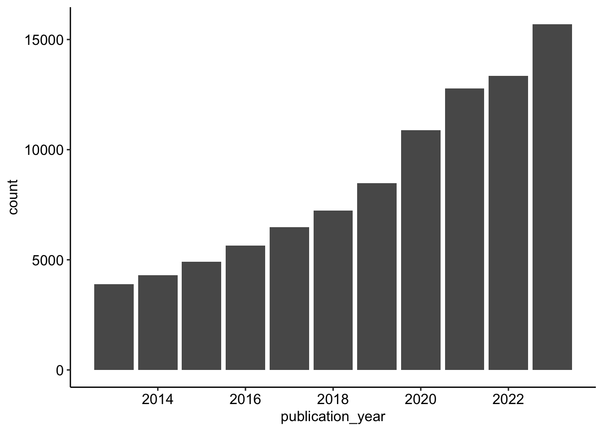

pacman::p_load(
here, qs,
magrittr, janitor,
easystats, sjmisc,
ggpubr,
openalexR,
tidyverse
)API mining and data wrangling with R
Session 07 - Showcase
 Link to slides
Link to slides
Packages
Zum Laden der Pakete wird das Paket
pacman::pload()genutzt, dass gegenüber der herkömmlichen Methode mitlibrary()eine Reihe an Vorteile hat:- Prägnante Syntax
- Automatische Installation (wenn Paket noch nicht vorhanden)
- Laden mehrerer Pakete auf einmal
- Automatische Suche nach
dependencies
Codechunks aus der Sitzung
Datenerhebung via API
# Set openalexR.mailto option so that your requests go to the polite pool for faster response times
options(openalexR.mailto = "christoph.adrian@fau.de")# Download data via API
review_works <- openalexR::oa_fetch(
entity = "works",
title.search = "(literature OR systematic) AND review",
primary_topic.domain.id = "domains/2", # Social Science
publication_year = "2013 - 2023",
verbose = TRUE
)# Overview
review_works # A tibble: 93,655 × 39
id title display_name author ab publication_date relevance_score so
<chr> <chr> <chr> <list> <chr> <chr> <dbl> <chr>
1 https… The … The PRISMA … <df> The … 2021-03-29 1625. BMJ
2 https… Pref… Preferred r… <df> Syst… 2015-01-01 1340. Syst…
3 https… Rayy… Rayyan—a we… <df> Synt… 2016-12-01 1314. Syst…
4 https… Syst… Systematic … <df> Scop… 2018-11-19 990. BMC …
5 https… Upda… Updated gui… <df> On a… 2019-10-03 963. Coch…
6 https… The … The WHO-5 W… <df> The … 2015-01-01 939. Psyc…
7 https… Pref… Preferred r… <df> Prot… 2015-01-02 914. BMJ
8 https… Guid… Guidance on… <df> Lite… 2017-08-28 752. Jour…
9 https… Lite… Literature … <df> Know… 2019-11-01 705. Jour…
10 https… The … The PRISMA … <df> The … 2021-04-01 653. Inte…
# ℹ 93,645 more rows
# ℹ 31 more variables: so_id <chr>, host_organization <chr>, issn_l <chr>,
# url <chr>, pdf_url <chr>, license <chr>, version <chr>, first_page <chr>,
# last_page <chr>, volume <chr>, issue <chr>, is_oa <lgl>,
# is_oa_anywhere <lgl>, oa_status <chr>, oa_url <chr>,
# any_repository_has_fulltext <lgl>, language <chr>, grants <list>,
# cited_by_count <int>, counts_by_year <list>, publication_year <int>, …Initiale Sichtung und Überprüfung der Datem
review_works %>% glimpse()Rows: 93,655
Columns: 39
$ id <chr> "https://openalex.org/W3118615836", "https…
$ title <chr> "The PRISMA 2020 statement: an updated gui…
$ display_name <chr> "The PRISMA 2020 statement: an updated gui…
$ author <list> [<data.frame[26 x 12]>], [<data.frame[8 x…
$ ab <chr> "The Preferred Reporting Items for Systema…
$ publication_date <chr> "2021-03-29", "2015-01-01", "2016-12-01", …
$ relevance_score <dbl> 1625.1708, 1340.1902, 1314.3904, 990.4521,…
$ so <chr> "BMJ", "Systematic reviews", "Systematic r…
$ so_id <chr> "https://openalex.org/S4393917726", "https…
$ host_organization <chr> NA, "BioMed Central", "BioMed Central", "B…
$ issn_l <chr> "1756-1833", "2046-4053", "2046-4053", "14…
$ url <chr> "https://doi.org/10.1136/bmj.n71", "https:…
$ pdf_url <chr> "https://www.bmj.com/content/bmj/372/bmj.n…
$ license <chr> "cc-by", "cc-by", "cc-by", "cc-by", NA, "c…
$ version <chr> "publishedVersion", "publishedVersion", "p…
$ first_page <chr> "n71", NA, NA, NA, NA, "167", "g7647", "93…
$ last_page <chr> "n71", NA, NA, NA, NA, "176", "g7647", "11…
$ volume <chr> NA, "4", "5", "18", NA, "84", "349", "39",…
$ issue <chr> NA, "1", "1", "1", NA, "3", "jan02 1", "1"…
$ is_oa <lgl> TRUE, TRUE, TRUE, TRUE, FALSE, TRUE, TRUE,…
$ is_oa_anywhere <lgl> TRUE, TRUE, TRUE, TRUE, TRUE, TRUE, TRUE, …
$ oa_status <chr> "hybrid", "gold", "gold", "gold", "green",…
$ oa_url <chr> "https://www.bmj.com/content/bmj/372/bmj.n…
$ any_repository_has_fulltext <lgl> TRUE, TRUE, TRUE, TRUE, TRUE, FALSE, TRUE,…
$ language <chr> "en", "en", "en", "en", "en", "en", "en", …
$ grants <list> NA, NA, NA, NA, NA, NA, NA, NA, NA, <"htt…
$ cited_by_count <int> 30303, 17347, 10540, 5298, 5664, 2657, 909…
$ counts_by_year <list> [<data.frame[5 x 2]>], [<data.frame[11 x …
$ publication_year <int> 2021, 2015, 2016, 2018, 2019, 2015, 2015, …
$ cited_by_api_url <chr> "https://api.openalex.org/works?filter=cit…
$ ids <list> <"https://openalex.org/W3118615836", "htt…
$ doi <chr> "https://doi.org/10.1136/bmj.n71", "https:…
$ type <chr> "article", "article", "article", "article"…
$ referenced_works <list> <"https://openalex.org/W1528251861", "htt…
$ related_works <list> <"https://openalex.org/W4234875088", "htt…
$ is_paratext <lgl> FALSE, FALSE, FALSE, FALSE, FALSE, FALSE, …
$ is_retracted <lgl> FALSE, FALSE, FALSE, FALSE, FALSE, FALSE, …
$ concepts <list> [<data.frame[20 x 5]>], [<data.frame[18 x…
$ topics <list> [<tbl_df[12 x 5]>], [<tbl_df[12 x 5]>], […Datentransformationen
Korrektur der Rohdaten
review_works_correct <- review_works %>%
mutate(
# Create additional factor variables
publication_year_fct = as.factor(publication_year),
type_fct = as.factor(type)
)Unnest topics
review_works_correct %>%
unnest(topics, names_sep = "_") %>%
glimpse()Rows: 942,560
Columns: 45
$ id <chr> "https://openalex.org/W3118615836", "https…
$ title <chr> "The PRISMA 2020 statement: an updated gui…
$ display_name <chr> "The PRISMA 2020 statement: an updated gui…
$ author <list> [<data.frame[26 x 12]>], [<data.frame[26 …
$ ab <chr> "The Preferred Reporting Items for Systema…
$ publication_date <chr> "2021-03-29", "2021-03-29", "2021-03-29", …
$ relevance_score <dbl> 1625.171, 1625.171, 1625.171, 1625.171, 16…
$ so <chr> "BMJ", "BMJ", "BMJ", "BMJ", "BMJ", "BMJ", …
$ so_id <chr> "https://openalex.org/S4393917726", "https…
$ host_organization <chr> NA, NA, NA, NA, NA, NA, NA, NA, NA, NA, NA…
$ issn_l <chr> "1756-1833", "1756-1833", "1756-1833", "17…
$ url <chr> "https://doi.org/10.1136/bmj.n71", "https:…
$ pdf_url <chr> "https://www.bmj.com/content/bmj/372/bmj.n…
$ license <chr> "cc-by", "cc-by", "cc-by", "cc-by", "cc-by…
$ version <chr> "publishedVersion", "publishedVersion", "p…
$ first_page <chr> "n71", "n71", "n71", "n71", "n71", "n71", …
$ last_page <chr> "n71", "n71", "n71", "n71", "n71", "n71", …
$ volume <chr> NA, NA, NA, NA, NA, NA, NA, NA, NA, NA, NA…
$ issue <chr> NA, NA, NA, NA, NA, NA, NA, NA, NA, NA, NA…
$ is_oa <lgl> TRUE, TRUE, TRUE, TRUE, TRUE, TRUE, TRUE, …
$ is_oa_anywhere <lgl> TRUE, TRUE, TRUE, TRUE, TRUE, TRUE, TRUE, …
$ oa_status <chr> "hybrid", "hybrid", "hybrid", "hybrid", "h…
$ oa_url <chr> "https://www.bmj.com/content/bmj/372/bmj.n…
$ any_repository_has_fulltext <lgl> TRUE, TRUE, TRUE, TRUE, TRUE, TRUE, TRUE, …
$ language <chr> "en", "en", "en", "en", "en", "en", "en", …
$ grants <list> NA, NA, NA, NA, NA, NA, NA, NA, NA, NA, N…
$ cited_by_count <int> 30303, 30303, 30303, 30303, 30303, 30303, …
$ counts_by_year <list> [<data.frame[5 x 2]>], [<data.frame[5 x 2…
$ publication_year <int> 2021, 2021, 2021, 2021, 2021, 2021, 2021, …
$ cited_by_api_url <chr> "https://api.openalex.org/works?filter=cit…
$ ids <list> <"https://openalex.org/W3118615836", "htt…
$ doi <chr> "https://doi.org/10.1136/bmj.n71", "https:…
$ type <chr> "article", "article", "article", "article"…
$ referenced_works <list> <"https://openalex.org/W1528251861", "htt…
$ related_works <list> <"https://openalex.org/W4234875088", "htt…
$ is_paratext <lgl> FALSE, FALSE, FALSE, FALSE, FALSE, FALSE, …
$ is_retracted <lgl> FALSE, FALSE, FALSE, FALSE, FALSE, FALSE, …
$ concepts <list> [<data.frame[20 x 5]>], [<data.frame[20 x…
$ topics_i <int> 1, 1, 1, 1, 2, 2, 2, 2, 3, 3, 3, 3, 1, 1, …
$ topics_score <dbl> 0.9993, 0.9993, 0.9993, 0.9993, 0.9832, 0.…
$ topics_name <chr> "topic", "subfield", "field", "domain", "t…
$ topics_id <chr> "https://openalex.org/T10206", "https://op…
$ topics_display_name <chr> "Methods for Evidence Synthesis in Researc…
$ publication_year_fct <fct> 2021, 2021, 2021, 2021, 2021, 2021, 2021, …
$ type_fct <fct> article, article, article, article, articl…Rekonstruktion OpexAlex Dashboard
Publikationen im Zeitverlauf
review_works_correct %>%
ggplot(aes(publication_year)) +
geom_bar() +
theme_pubr()
Häufigkeit Forschungsfelder
review_works_correct %>%
unnest(topics, names_sep = "_") %>%
filter(topics_name == "field") %>%
filter(topics_i == 1) %>%
sjmisc::frq(topics_display_name, sort.frq = "desc")topics_display_name <character>
# total N=93655 valid N=93655 mean=4.41 sd=1.62
Value | N | Raw % | Valid % | Cum. %
----------------------------------------------------------------------
Social Sciences | 30580 | 32.65 | 32.65 | 32.65
Psychology | 29054 | 31.02 | 31.02 | 63.67
Business, Management and Accounting | 15558 | 16.61 | 16.61 | 80.29
Decision Sciences | 7261 | 7.75 | 7.75 | 88.04
Economics, Econometrics and Finance | 6796 | 7.26 | 7.26 | 95.30
Arts and Humanities | 4406 | 4.70 | 4.70 | 100.00
<NA> | 0 | 0.00 | <NA> | <NA>Relevanteste Publikationen
review_works_correct %>%
arrange(desc(relevance_score)) %>%
select(publication_year_fct, relevance_score, title) %>%
head(5) %>%
gt::gt()| publication_year_fct | relevance_score | title |
|---|---|---|
| 2021 | 1625.1708 | The PRISMA 2020 statement: an updated guideline for reporting systematic reviews |
| 2015 | 1340.1902 | Preferred reporting items for systematic review and meta-analysis protocols (PRISMA-P) 2015 statement |
| 2016 | 1314.3904 | Rayyan—a web and mobile app for systematic reviews |
| 2018 | 990.4521 | Systematic review or scoping review? Guidance for authors when choosing between a systematic or scoping review approach |
| 2019 | 962.6738 | Updated guidance for trusted systematic reviews: a new edition of the Cochrane Handbook for Systematic Reviews of Interventions |
Lageparameter
review_works_correct %>%
select(where(is.numeric)) %>%
datawizard::describe_distribution() %>%
print_html()| Variable | Mean | SD | IQR | Min | Max | Skewness | Kurtosis | n | n_Missing |
|---|---|---|---|---|---|---|---|---|---|
| relevance_score | 31.73 | 42.51 | 36.48 | 1.17 | 1625.17 | 4.75 | 67.87 | 93655 | 0 |
| cited_by_count | 18.33 | 146.36 | 10.00 | 0.00 | 30303.00 | 123.44 | 22236.55 | 93655 | 0 |
| publication_year | 2019.40 | 2.97 | 5.00 | 2013.00 | 2023.00 | -0.58 | -0.77 | 93655 | 0 |